Curicaca
 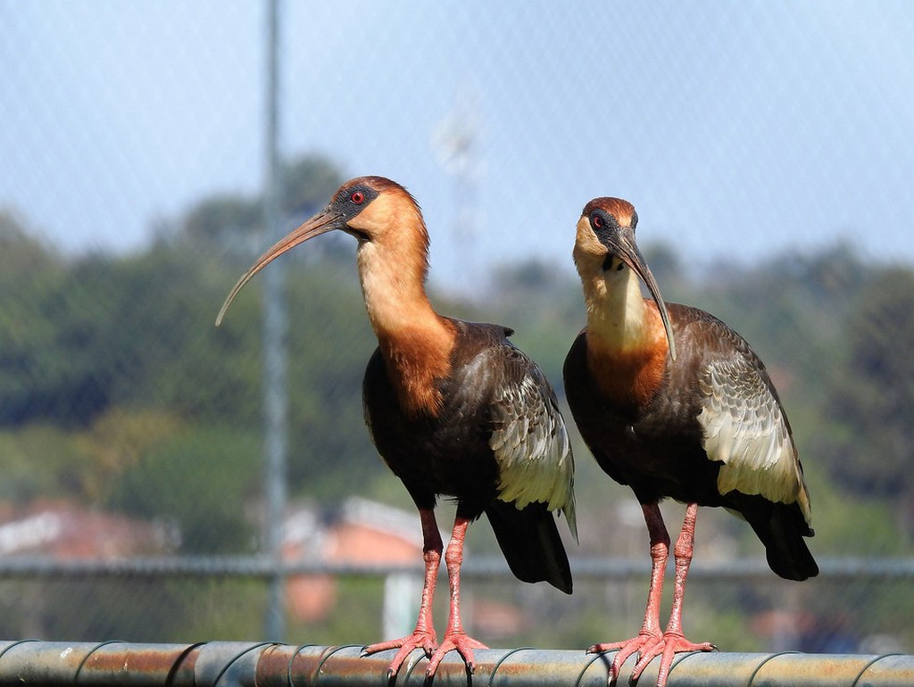
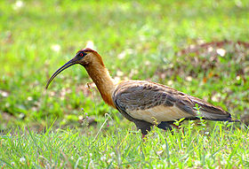
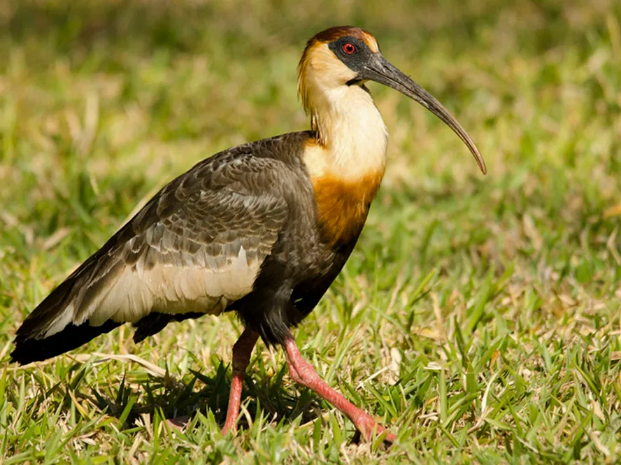
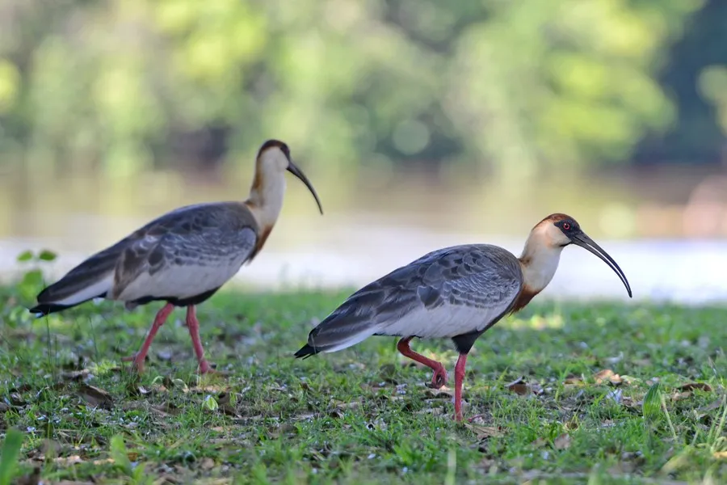
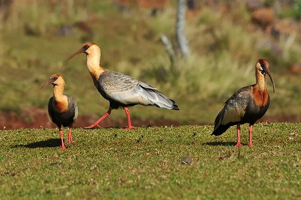
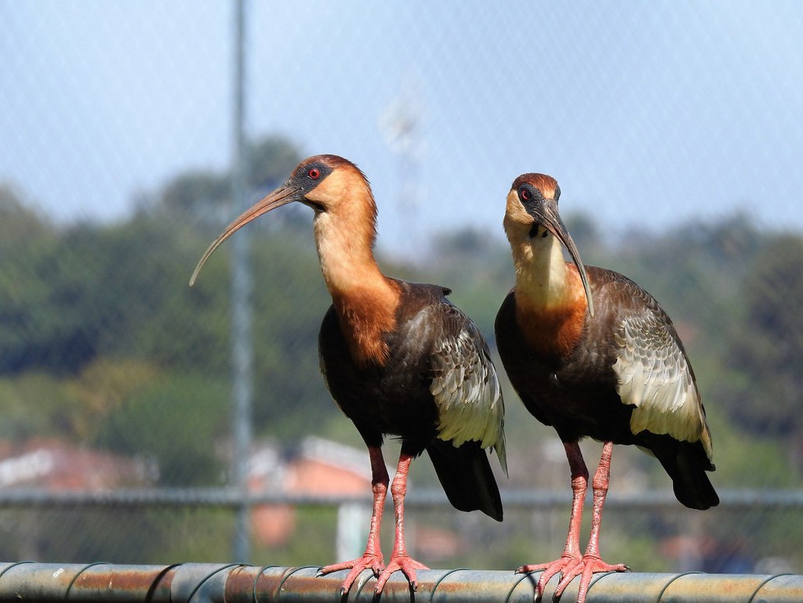
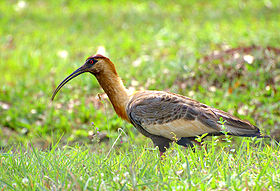
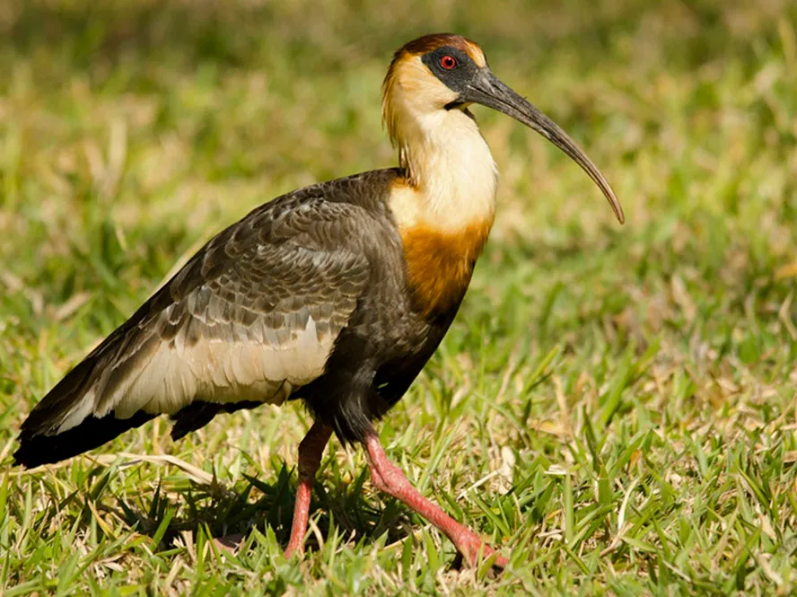
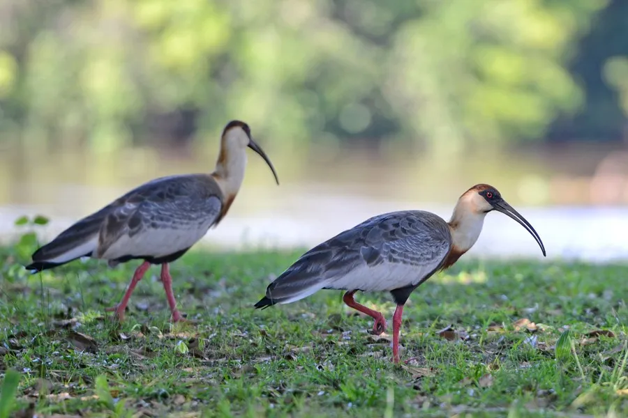
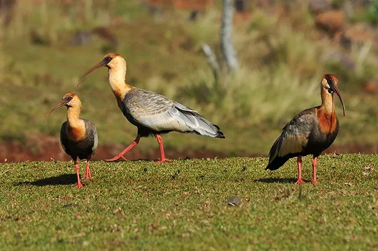
INFORMAÇÕES SOBRE O ANIMAL
- Nome Científico: Theristicus caudatus
(Boddaert, 1783) - Nomes Populares: Seu nome popular é onomatopaico, semelhante ao som do seu canto, composto de gritos fortes. Conhecida também como despertador (Pantanal), carucaca, curicaca-comum, curicaca-branca, curicaca-de-pescoço-branco e caricaca (algumas cidades de Minas Gerais).
- Atualmente a espécie não corre risco de extinção.
Classificação Biológica
- Dominio: Eukaryota
- Reino: Animalia
- Filo: Chordata
- Classe Aves
- Ordem: Pelecaniformes
- Família: Threskiornithidae
- Espécie: T. caudatus
Nutrição Geral e Hábitos Alimentares
- Tipo de Nutrição: Heterotrófico.
- Atrópodes: O curicaca se alimenta de uma variedade de artrópodes, incluindo centopeias, aranhas e insetos adultos e larvas.
- Pequenos vertebrados: Ele também pode predar pequenos lagartos, ratos e até mesmo aves menores.
- Invertebrados Diversos: Além disso, o curicaca consome outros tipos de invertebrados.
- Anfíbios e Pequenas Serpentes: O curicaca é um dos poucos predadores que não se incomodam com as toxinas liberadas pelo sapo (Bufo granulosus), por isso este anfíbio pode fazer parte de sua dieta.
- Caramujos: Este é outro item alimentar na dieta do curicaca.
- O curicaca se alimenta durante o dia e também ao pôr do sol. Seu bico longo e curvo é adaptado para extrair larvas de besouros e outros insetos da terra fofa. É interessante notar que a dieta do curicaca pode variar dependendo da disponibilidade de alimentos em seu habitat.
Morfologia Básica e Coloração
- O curicaca é uma ave de porte médio.
Mede cerca de 69 cm de comprimento e tem cerca de 43 cm de altura.
Possui um bico longo e curvo.
As pernas do curicaca são longas para o corpo. - Coloração
- A plumagem da ave é predominantemente cinza, sendo o tom mais escuro nas penas e na cauda, e mais pálido no peito e no ventre.
O dorso é cinzento-claro, com brilho esverdeado.
As penas de voo e a cauda são cinza escuro, quase pretas.
Parte das coberteiras superiores das asas é esbranquiçada, formando uma mancha clara no lado superior da asa, visível durante o voo.
O pescoço é esbranquiçado ou alaranjado, o peito é alaranjado, e as partes inferiores são negras.
As pernas são avermelhadas. Comportamento e Sobrevivência
- É diurna e crepuscular. Anda em pequenos grupos, que à noite se empoleiram nas árvores. Gosta de planar a grandes alturas.
- Costuma passar grandes periodos andando no chão a procura de alimento.
- São muitos sociaveis e raramente são vistas sozihas.
- Não se intimidam facilmente e seus predadores (gato-do-mato, gaviões reais) pensam duas vezes antes de atacalo.
Distribuição no Brasil
- Razoavelmente comum em brejos e na margem de lagoas e baías. Distribuição: Ocorre no Brasil (Pantanal e Rio Grande do Sul), leste e norte da Bolívia, Paraguai, Uruguai e norte da Argentina.
- No IFMG Campus Bambuí é possivel observalos ao redor das lagoas, andando a procura de alimento.
- Mapa de Ocorrência 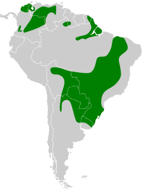
Reprodução
- Os indivíduos associam-se em colônias e nidificam sobre rochas ou árvores existentes nos campos. Além disso, os ovos são brancos ou pardacentos salpicados, eles põem cerca de 5 ovos. E a incubação é de 20 a 25 dias, o casal reveza-se para cuidar dos filhotes, que são alimentados por regurgitação.
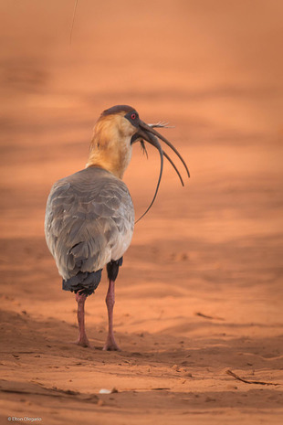
Curicaca se alimentando.